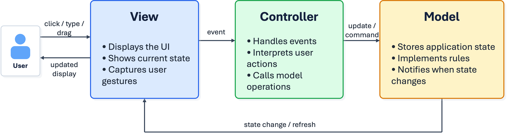

Today's Roadmap
Main question: which part of the program should own each decision?
See why a JavaFX controller can become too large.
Define Model, View, and Controller responsibilities.
Connect MVC to JavaFX and FXML code.
Separate a simple Student record into Model, View, and Controller.
Trace a desktop event through MVC.
Apply MVC to a small JavaFX drawing app.
Extend the drawing app with one new feature.
JavaFX Controllers Can Grow Too Large
In a small JavaFX program, it is tempting to put everything in the controller.
Read input from controls.
Check whether the input is valid.
Store application state.
Apply rules.
Update labels, tables, or drawings.
Load or save data.
The program may run, but the controller becomes hard to read, test, and change.
A Controller Doing Too Much
@FXML
private void saveClicked() {
String title = titleField.getText();
if (title.isBlank()) {
statusLabel.setText("Title required");
return;
}
currentDocument.setTitle(title);
currentDocument.setModified(false);
fileService.save(currentDocument);
statusLabel.setText("Saved");
}This method reads UI input, validates data, changes state, saves data, and updates the UI.
MVC separates those responsibilities so one event handler does not become the whole application.
What MVC Separates
MVC divides an interactive application into three parts.
Model: application data, state, and rules.
View: what the user sees, such as JavaFX controls and rendering.
Controller: event handling and coordination between View and Model.

MVC in a JavaFX/FXML App
In a JavaFX/FXML app, MVC keeps the controller focused on events and coordination.
FXML and JavaFX controls describe the View.
@FXML event handlers are Controller entry points.
Plain Java objects store application state and rules in the Model.
Helper classes such as file services may still exist when the app needs them.
FXML + controls -> View
@FXML event handler -> Controller
Document, Drawing -> ModelModel
The Model represents what the application knows and what rules are valid.
Stores state: drawing points, selected color, current document, dirty flag.
Provides operations: add a point, clear a drawing, rename a document.
Enforces rules: clamp brush size, reject invalid values, keep IDs unique.
Can be tested without starting a JavaFX window.
The Model should not contain JavaFX controls such as Button, TextField, or Canvas.
View
The View displays the current state and exposes UI controls.
Owns JavaFX layout, controls, and rendering code.
Shows data from the Model.
Collects raw user input through controls.
May provide helper methods such as
redraw(),setStatus(...), orgetCanvas().
The View should render information, not decide application rules.
Controller
The Controller connects JavaFX events to application behavior.
Receives user actions: button clicks, menu choices, mouse drags, key events.
Reads needed values from the View.
Calls Model operations to change application state.
Asks the View to refresh when the screen should change.
The Controller coordinates work, but it should not become the whole application.
What Each Part Should Avoid
Model: avoid JavaFX controls and screen layout code.
View: avoid business rules and hidden application state.
Controller: avoid duplicating domain logic or storing all data itself.
If one class answers all three questions...
1. What data do we store?
2. What rules make the data valid?
3. How should the screen look?
...then that class is probably doing too much.Student Example
A student record can use MVC even without a graphical interface.
StudentModel: stores
nameandid, and owns the student data.StudentView: displays student details, but does not store the real data or decide rules.
StudentController: receives update requests, changes the model, and asks the view to display results.
Controller changes StudentModel.
Controller asks StudentView to display StudentModel data.Student Example Flow
The same three responsibilities apply before we add JavaFX controls.
User wants to rename a student
-> StudentController receives the request
-> StudentController calls model.setName(newName)
-> StudentModel stores the new name
-> StudentController calls view.printStudentDetails(...)
-> StudentView displays the current model dataThe Model owns the data.
The View presents the data.
The Controller coordinates the change.
Desktop MVC Is Event Driven
In JavaFX, the program stays open and responds to many small events.
A button click runs an event handler.
A menu item runs an event handler.
A mouse drag runs an event handler.
The application commonly keeps state in memory while it is running.
User event
-> Controller event handler
-> Model operation
-> View redraws from Model stateExample Event Flow
User drags mouse on Canvas
-> Controller handles the MouseEvent
-> Controller starts or extends a Stroke
-> Model stores the point in that Stroke
-> Controller calls view.redraw()
-> View reads model.getStrokes()
-> Canvas shows the updated drawingThe controller handles the event. The model stores the data. The view draws the result.
Drawing App Responsibilities
The same MVC split also works in a JavaFX drawing app.
A small drawing app records strokes and renders them on a canvas.
DrawModel: stores strokes and the selected color.
Stroke: keeps the points and color used for one mouse drag.
DrawView: owns the canvas, color choice, button, and status label.
DrawController: handles mouse and control events.
DrawController updates DrawModel.
DrawView renders DrawModel.
DrawModel does not know JavaFX controls.Drawing App UML
Model: Own State and Rules
The Model stores the drawing data and provides operations that change that data.
public final class DrawModel {
private final List<Stroke> strokes = new ArrayList<>();
private InkColor selectedColor = InkColor.BLACK;
public void startStroke(double x, double y) {
strokes.add(new Stroke(selectedColor, new Point(x, y)));
}
public void addPoint(double x, double y) {
strokes.getLast().addPoint(new Point(x, y));
}
public List<Stroke> getStrokes() {
return Collections.unmodifiableList(strokes);
}
}The Model owns the strokes and selected color.
The Model exposes operations such as start stroke and add point.
The Model has no JavaFX controls or drawing code.
View: Render Current State
The View owns the JavaFX controls and redraws the screen from Model state.
public final class DrawView extends BorderPane {
private final DrawModel model;
private final Canvas canvas = new Canvas(700, 440);
public Canvas getCanvas() {
return canvas;
}
public void redraw() {
GraphicsContext graphics = canvas.getGraphicsContext2D();
clearCanvas(graphics);
for (DrawModel.Stroke stroke : model.getStrokes()) {
drawStroke(graphics, stroke);
}
}
}The View owns the canvas and rendering code.
The View reads Model state when it redraws.
The View does not decide drawing rules or update drawing state itself.
Controller: Turn Events into Operations
The Controller receives JavaFX events and calls the correct Model and View methods.
public void connectHandlers() {
view.getCanvas().setOnMousePressed(event -> {
model.startStroke(event.getX(), event.getY());
view.redraw();
});
view.getCanvas().setOnMouseDragged(event -> {
model.addPoint(event.getX(), event.getY());
view.redraw();
});
view.getClearButton().setOnAction(event -> {
model.clear();
view.redraw();
view.setStatus("Drawing cleared.");
});
}The Controller translates events into Model operations.
The Controller asks the View to redraw after state changes.
The Controller coordinates work, but does not store the drawing itself.
Adding Brush Size
Where should each part of this feature go?
Model: validates the incoming value and stores it in the new
Stroke.View: provides the choice and renders each stroke using its saved size.
Controller: passes the selected value to the Model when a stroke begins.
Only new strokes use the new selection.
Feature question:
Who owns the value?
Who displays or collects it?
Who moves it from the UI into the Model?Model Change: Validate and Save Size
The brush size becomes part of the drawing state, so the Model stores it with each stroke.
public void startStroke(double x, double y, int brushSize) {
int size = Math.max(1, Math.min(brushSize, 20));
strokes.add(new Stroke(
selectedColor, size, new Point(x, y)));
}
public static final class Stroke {
private final InkColor color;
private final int brushSize;
private final List<Point> points = new ArrayList<>();
public int getBrushSize() {
return brushSize;
}
}The Model validates the size before storing it.
Each stroke remembers the size it started with.
View Change: Choose and Render Size
The View owns the UI control and uses the saved Model value when drawing.
private final ChoiceBox<Integer> brushSizeChoice =
new ChoiceBox<>();
public int getSelectedBrushSize() {
return brushSizeChoice.getValue();
}
private void drawStroke(GraphicsContext graphics,
DrawModel.Stroke stroke) {
double size = stroke.getBrushSize();
graphics.setLineWidth(size);
graphics.setStroke(toJavaFxColor(stroke.getColor()));
// draw the stroke's points using the saved size
}The View collects the current brush-size choice.
The View renders each stroke using the size saved in the Model.
The View does not decide whether the size is valid.
Controller Change: Pass the Choice Once
The Controller reads the selected size when the stroke begins and passes it to the Model operation.
view.getCanvas().setOnMousePressed(event -> {
int size = view.getSelectedBrushSize();
model.startStroke(event.getX(), event.getY(), size);
view.redraw();
view.setStatus("Brush size: " + size);
});The Controller moves user input into the Model operation.
The Model stores the size with the new stroke.
Changing the choice later does not change strokes already drawn.
Why MVC Helps
The Model can be tested without launching the UI.
The View can change without rewriting application rules.
The Controller is easier to read when it only coordinates events.
New features have a clearer place to go.
The program is easier to maintain as it grows.
Pitfalls to Avoid
Fat controller: the controller stores all data and rules.
Smart view: the view makes application decisions.
UI-dependent model: the model contains JavaFX controls.
Too many layers: a tiny one-off program becomes harder than needed.
Adding files is not the goal.
The goal is to put each responsibility in the right place.Check Your Design
What data do we store, and what rules make it valid? Model
How should the current state appear to the user? View
What should happen after this click, drag, or menu choice? Controller
Model: knows application state.
View: knows the screen.
Controller: knows how user events become operations.